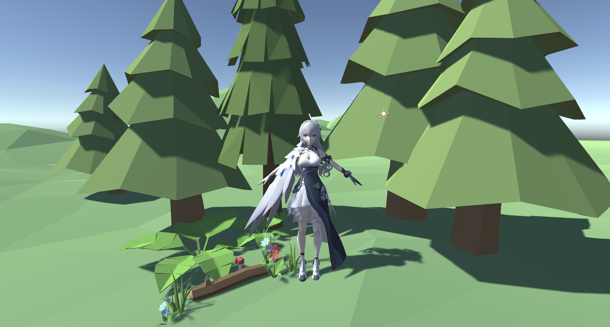
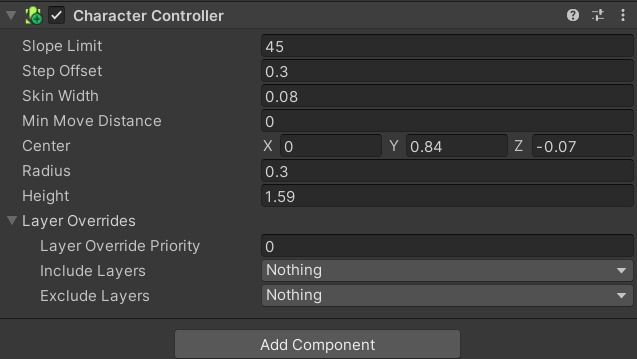
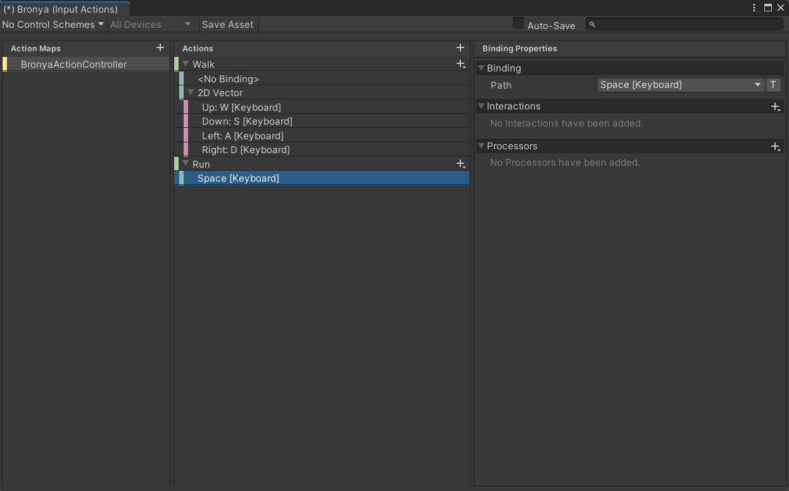
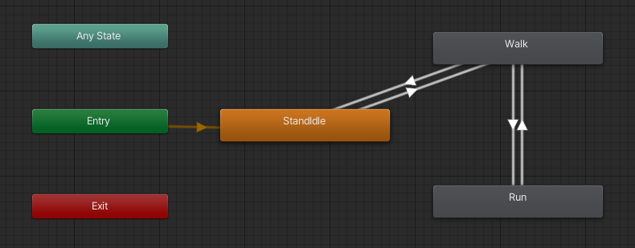
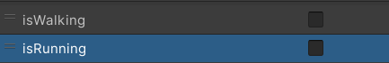

Character Controller
角色控制器不同于刚体+碰撞体，但角色控制器可以控制角色的移动并进行碰撞检测。不过神奇的地方在于被它绑定的角色并不会受到力的作用，角色只有在
Move函数里面才能进行运动（当然会受到碰撞检测的制约）。然后就基于这个组件做了一个人物移动的demo。
-> 官方文档
场景搭建

scene
模型：Bronya-次生银翼
场景：Unity商店
绑定角色控制器
添加Physics/Character
Controller组件，调整大小和位置，使其刚好包围人的主体部分。

1691338767159
绑定玩家输入
这里要使用键盘AWSD作为人物walk的输入，按住shift以后改为run。输入的管理使用InputSystem插件。
- 创建Input Action文件
- 创建动作映射： Action map -> Actions ->
Action Propertites / Binding Propertites

1691339763299
- 自动生成C#文件（放在scripts目录下面），里面自动生成以上的映射关系，在其它地方使用时需要
Import UnityEngine.InputSystem
角色移动
接下来自己创建一个用于角色动作控制的脚本
1
2
3
4
5
6
7
8
9
10
11
| using UnityEngine;
namespace Bronya {
public class BronyaActionController : MonoBehaviour {
private void Start() { }
private void Update() { }
}
}
|
添加成员变量：
1
2
3
4
5
6
|
private BronyaInput _bronyaInput;
private CharacterController _characterController;
private Vector2 _movementInput;
|
在 Awake()函数中实例化上述中的两个成员变量：
1
2
3
4
| private void Awake() {
_bronyaInput = new BronyaInput();
_characterController = GetComponent<CharacterController>();
}
|
并创建enable和disable函数用于控制角色控制器是否启用：
1
2
3
4
5
6
7
| private void OnEnable() {
_bronyaInput.BronyaActionController.Enable();
}
private void OnDisable() {
_bronyaInput.BronyaActionController.Disable();
}
|
行走
行走的实现需要包含速度，方向；
由于用到了InputSystem这个插件，自己实现行走的回调函数
1
2
3
4
5
6
7
8
9
| public static void OnWalk(InputAction.CallbackContext context) {
MovementInput = context.ReadValue<Vector2>();
IsWalkPressed = MovementInput.x != 0 || MovementInput.y != 0;
WalkSpeedVector.x = MovementInput.x * WalkSpeedFactor;
WalkSpeedVector.z = MovementInput.y * WalkSpeedFactor;
WalkSpeedVector.y = GlobalVariables.ZeroF;
}
|
在Awake函数中绑定回调函数。回调函数中主要是计算角色行走时的速度。
1
2
| _inputSystem.BronyaActionController.Walk.started += MovementController.OnWalk;
_inputSystem.BronyaActionController.Walk.canceled += MovementController.OnWalk;
|
另外编写控制角色行走的函数MovementHandler()用于帧更新（放在Update()中）
1
2
3
| private void MovementHandler() {
_characterController.Move(MovementController.WalkSpeedVector * Time.deltaTime);
}
|
此时等待Unity编译后可以操控角色行走（移动）
 1691924618535
1691924618535
添加动画
下面添加行走动画：首先要找动画资源，拖入unity中修改骨骼为Humanoid（这里略）；其次为角色添加AnimationController，可以发现动画是由状态机控制的，创建初始状态为Idle，再创建新状态为Walk（后续的跑步亦如此）

1691926979364
为状态之间添加上图所示的Transition，三个状态之间的转换用两个布尔型的变量来控制即可

1692006048905
在创建用于控制角色动画的函数
1
2
3
4
5
6
7
8
9
10
11
12
13
14
15
16
17
18
19
| private void AnimationHandler() {
var isWalking = _bronya.GetIsWalking();
var isRunning = _bronya.GetIsRunning();
if (_characterController.isGrounded) {
if (MovementController.IsWalkPressed && !isWalking) {
_bronya.PlayWalkAnimation();
}
else if (!MovementController.IsWalkPressed && isWalking) {
_bronya.StopWalkAnimation();
}
if ((MovementController.IsWalkPressed && MovementController.IsRunPressed) && !isRunning) {
_bronya.PlaRunAnimation();
}
else if ((!MovementController.IsWalkPressed || !MovementController.IsRunPressed) && isRunning) {
_bronya.StopRunAnimation();
}
}
}
|
相关的角色动作都记录在如下的类中，和上面的移动代码分开管理
1
2
3
4
5
6
7
8
9
10
11
12
13
14
15
16
17
18
19
20
21
22
23
24
25
26
27
28
29
30
31
32
33
34
35
36
37
38
39
| namespace Bronya {
public class BronyaActionController : MonoBehaviour {
private Animator _animator;
private int _isWalkingHash;
private int _isRunningHash;
private void Awake() {
_animator = GetComponentInChildren<Animator>();
_isWalkingHash = Animator.StringToHash("isWalking");
_isRunningHash = Animator.StringToHash("isRunning");
}
public bool GetIsWalking() {
return _animator.GetBool(_isWalkingHash);
}
public bool GetIsRunning() {
return _animator.GetBool(_isRunningHash);
}
public void PlayWalkAnimation() {
_animator.SetBool(_isWalkingHash, true);
}
public void StopWalkAnimation() {
_animator.SetBool(_isWalkingHash, false);
}
public void PlaRunAnimation() {
_animator.SetBool(_isRunningHash, true);
}
public void StopRunAnimation() {
_animator.SetBool(_isRunningHash, false);
}
}
}
|
目前的移动如下所示
 1692012104234
1692012104234
添加转向
可以发现目前的问题是角色不会根据移动的方向进行转向，因此继续添加控制角色转向的代码，如下
1
2
3
4
5
6
7
8
9
10
| private void RotationHandler() {
Vector3 lookAtPosition;
lookAtPosition.x = MovementController.WalkSpeedVector.x;
lookAtPosition.z = MovementController.WalkSpeedVector.z;
lookAtPosition.y = GlobalVariables.ZeroF;
if (MovementController.IsWalkPressed) {
transform.rotation = Quaternion.Slerp(transform.rotation, Quaternion.LookRotation(lookAtPosition),
MovementController.RotationSpeedFactor);
}
}
|
可以看到角色已经可以正常进行转向了
 1692012118894
1692012118894
添加重力
但此时还可以发现一个致命问题是角色没有重力
这是因为在CharacterController中控制的物体是不受重力的，需要自己添加向下的力
于是添加GravityHandler如下
1
2
3
4
5
6
7
8
9
10
11
| private void GravityHandler() {
if (_characterController.isGrounded) {
MovementController.WalkSpeedVector.y = GlobalVariables.GravityAccelerate;
MovementController.RunSpeedVector.y = GlobalVariables.GravityAccelerate;
}
else {
MovementController.WalkSpeedVector.y += GlobalVariables.GravityAccelerate;
MovementController.RunSpeedVector.y += GlobalVariables.GravityAccelerate;
}
}
|
即：如果此时CharacterController检测到角色与地面有接触时，角色的重力直接等于9.8，方向向下（相当于给角色一个向下的速度，让角色“压”住地面）；如果没有与地面有接触，则不断增加角色的下落速度（模拟自由落体时速度的变化）
跑步
跑步的代码类似与走路，唯一不同之处是我们选择用button来控制角色是否应该开始跑步
角色移动的演示
 1692012129227
1692012129227